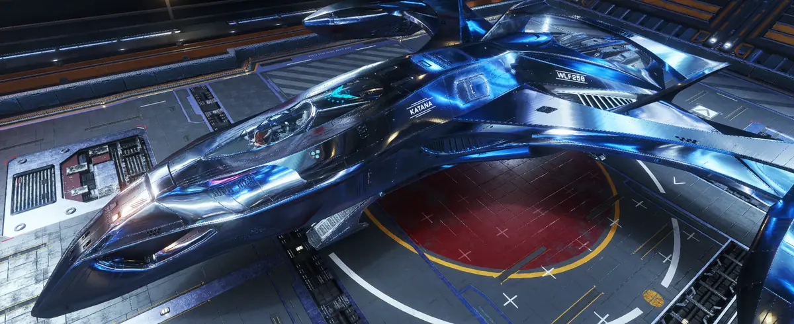

NGC 2546 Sector UZ-G d10-16
Welcome to 10-16
A living operations archive for a system discovered, colonized, and continually shaped by CMDR Wolf258. Follow exploration, infrastructure, resource surveys, faction strategy, and the continuing story of a home built in the black.
“Some places are discovered. This one is a home.” — CMDR Wolf258
System Intelligence
Identity, population, major bodies, strategic landmarks, and the development record of 10-16.
›Colony Network
Starports, surface facilities, industrial hubs, and the infrastructure turning a discovery into a functioning colony.
›Resource Survey
Signals, commodities, coordinates, rig density, and preferred extraction sites.
›Influence Operations
Live factions, states, daily orders, and the long-range strategy behind 10-16.
›Visual Recon
Real screenshots, landmarks, ships, and the visual history of the system.
›
The System
NGC 2546 Sector UZ-G d10-16
A discovered frontier transformed into a working home system: billions of inhabitants, growing infrastructure, strategic resources, custom landmarks, and an archive built to preserve every stage of the journey.
Explore the system
Commander Operations
Katana
Flight operations are part of the archive, not separate from it. Katana represents the active side of 10-16: travel, surveying, logistics, combat readiness, and the constant work of shaping a system.
View captureGallery